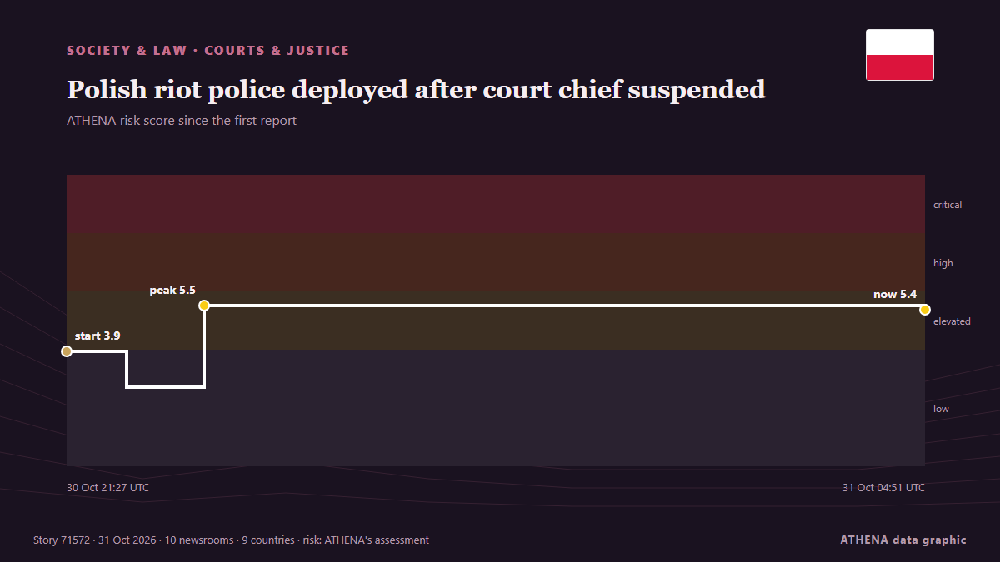

Sociedad, derecho y políticas públicas
Los titulares se muestran en inglés, tal como se publicaron.

Tribunales y justiciaPolish riot police deployed after court chief suspended
The court frequently ruled in favour of Polish legislation over European Union law. de Euractiv
| 18 oct | 30 |
|---|---|
| 19 oct | 145 |
| 20 oct | 45 |
| 21 oct | 115 |
| 22 oct | 222 |
| 23 oct | 188 |
| 24 oct | 120 |
| 25 oct | 134 |
| 26 oct | 321 |
| 27 oct | 301 |
| 28 oct | 278 |
| 29 oct | 240 |
| 30 oct | 223 |
| 31 oct | 2 |
Dockworkers in 22 countries strike over arms shipments, Gaza war
Dockworkers across 113 ports in 25 countries launch global strike against arms shipments to Israel, as Palestinians rally in Gaza in solidarity. de The New Arab
New York state police to take over sexual assault complaints at Cornell University
New York state police will take over future sexual assault investigations at Cornell University, Governor Kathy Hochul said… de BusinessWorld
UN Refugee Agency Says 9 Million Need Extra Winter Help
The UN refugee agency highlights the need for extra winter assistance for nine million people across Ukraine, Syria, Lebanon, and Afghanistan, seeking $50 million in donations. de Arab News
Mushroom killer Erin Patterson emotionless as appeal dismissed
Mushroom killer Erin Patterson is likely to die behind bars after Victoria’s Court of Appeal quashed her bid to overturn her triple murder conviction. de Sydney Morning Herald
Thousands of students and workers protest in Italy under heavy security
Thousands of students and workers took to the streets across Italy on Friday, calling for more school funding and relief from the soaring cost of living, amid a high police presence to avert possible… de The Local Italy
Humanitarian aid being delivered to Oleshky, 25 buses with 750 seats ready for evacuation – Lubinets
Ukraine's Human Rights Commissioner, Dmytro Lubinets, said that 25 buses with a total capacity of 750 seats had been prepared to evacuate residents of Oleshky, along with ambulances for people with… de Ukrinform (English)
Spain’s transport minister refuses to resign over Toledo train crash as elections loom
Oscar Puente ruled out stepping down at a press conference at the Transport Ministry in Madrid on Friday. de The Olive Press
3 dead in rock spire collapse at tourist site in Turkiye's Cappadocia
A landslide triggered by heavy rainfall caused a rock spire to collapse in Turkiye’s Unesco World Heritage-listed Cappadocia region on Thursday, bringing the death toll to three, officials said. de Dawn
Spain working 'tirelessly' to identify train crash dead: PM
Relatives of the victims have endured an agonising wait for news as rescue crews sift through the wreckage of tangled metal and bodies are examined in morgues. de CNA (Channel NewsAsia)
U.K. police share update on probe into claims against Meghan Markle’s father
The Metropolitan Police acknowledged receiving a letter in 2019 regarding accusations about Meghan Markle’s father but did not share this information with other law agencies. de Arab News
High-speed train collision in Spain: 68 dead, more than 100 injured
MADRID: At least 10 people have died after a major collision involving two high-speed passenger trains in the central Spanish province of Toledo.The accident prompted the suspensi... de Oman Observer
Kenya: U.S. Embassy Credits Kenyan Agencies in Usd750,000 Crypto Seizure
[Capital FM] Nairobi -- The US Embassy in Nairobi has praised Kenyan investigative agencies, prosecutors and financial regulators for their role in a joint operation that seized more than USD750,000… de AllAfrica
S Korea to prosecute students cheating with smart glasses
South Korea will file criminal complaints against students caught cheating on a national university entrance exam with smart glasses and toughen penalties for their use, a government official has… de RTÉ News
Grieving Spain demands answers for latest rail disaster
One of Europe’s deadliest rail disasters this century struck south of Madrid on Wednesday morning, killing 69 people and injuring dozens more. de Free Malaysia Today
EU to slap new €2 fee on online shopping orders from outside Europe
The EU will charge an extra €2 "processing fee" on parcels imported into the European Union from Sunday November 1st in a bid to reduce the influx of cheap Chinese products bought on the internet. de The Local Austria
Ex-FBI officials charged with lying to Congress about Hunter Biden probe
Two former FBI officials are facing charges for lying to Congress about their involvement in the agency’s investigation into Hunter Biden’s laptop. de The Hill
Iran foreign minister offers condolences to Spain over deadly train crash
Portugal’s government announced that it has offered Spain support through organisations such as CP and Infraestruturas de Portugal, following the train crash in Toledo today that has claimed at least. de Portugal Resident
Budget will leave many Scots ‘staring down barrel’ of high energy bills – SNP
New analysis from the Scottish Parliament information Centre shows that more than 800,000 Schigher gas bills could see an increase. de Evening Standard (London)
Russell Brand denies all charges as he testifies at his rape and sex assault trial
The British actor-comedian acknowledged in a London court on Wednesday that he had been obsessed with sex as a younger man, but denied multiple charges of rape and sexual assault, saying the claims… de PBS NewsHour
Cost concerns set to shape US midterms
Data centres are the lifeblood of our digital world, but there are growing concerns about their environmental impact. de BBC Business
Hong Kong leader apologizes for deadly Tai Po fire, pledges reforms
Hong Kong leader John Lee apologized on Thursday for the deadly blaze that killed 168… de BusinessWorld
Xi extends condolences over deadly train collision in Spain
Associated Press Of Pakistan PM expresses grief over devastating train collision in Spain ISLAMABAD, Oct 28 (APP): Prime Minister Muhammad Shehbaz Sharif, Wednesday, expressed his profound grief over… de APP (Associated Press of Pakistan)
Three French nationals jailed for life in Iraq for Islamic State ties
BAGHDAD, Oct 29 - Three French nationals were sentenced to life in prison in Iraq on Thursday for belonging to Islamic State, with their lawyers and French embassy representatives present at the… de The Straits Times
US fires senior army general in latest ouster: reports
The United States has fired a top military planner, US media reported, in a surprise shake-up as President Donald Trump appears to be preparing to resume large-scale strikes against Iran. de Al-Monitor
92-year-old US judge handling Maduro case dies
His death was confirmed by an official at the United States District Court, Southern District of New York, where he presided. de Channels TV
French Senate Passes Bill to Make Protesters Pay for Unrest Damage
However critics warned the move could curb the right to protest. de The Straits Times
Update / 10 tourists killed in fire at Cox’s Bazar resort
Fire erupts at a resort in Cox’s Bazar, tourist hub in southeastern Bangladesh, fire service confirms. de Express Tribune
China adopts measures to tighten discipline in Communist Party
The fifth plenum of the Central Committee, led by President Xi Jinping, adopted a decision on "advancing full and rigorous governance of the party", which includes reducing corruption among cadres… de CNA (Channel NewsAsia)
Spain’s deadly train crash adds new complication to Sanchez’s reelection campaign
The crash that killed 68 people in Toledo province has fuelled criticism of railway underinvestment under Pedro Sanchez’s government. de Free Malaysia Today
Serbia’s ‘students’ celebrate for a second night after election victory
Thousands gathered on the streets of Belgrade for a second night to celebrate the student-led movement's victory. de Al Jazeera English
Standing charges to be scrapped from gas bills next year – Treasury
The charges are a fixed daily fee added to bills. de Evening Standard (London)
Iran court sentences award-winning filmmaker Jafar Panahi to 5 years in prison
The 66-year-old won the top prize in the 2025 Cannes film festival for It Was Just An Accident. de The Straits Times
Survivors of clergy sexual abuse reach $800m. settlement with New York Archdiocese
In addition to the $800 million settlement, the archdiocese agreed to release documents pertaining to sexual offenders in the Church. de The Jerusalem Post
Ambani, Adani outlets among Indian publishers contesting Modi’s privacy law
The October 6 lawsuit is the most high-profile challenge to Modi’s privacy law. de Express Tribune